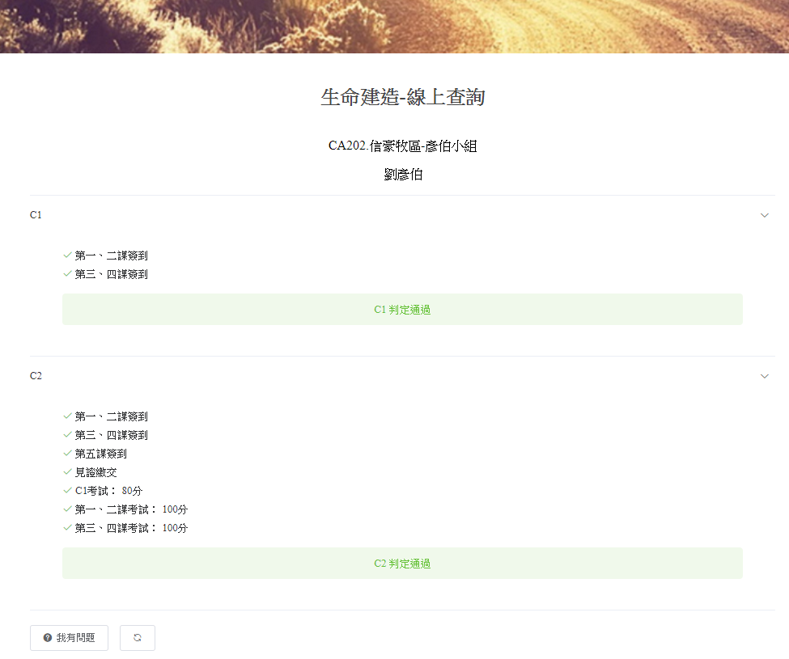

開發說明
1. 將 Api/GetMemSubData.aspx 的 JSON 資料帶入 MemSubQuery.aspx 同一頁。
1.1. 標示為 true 的欄位要有勾勾的圖示，標示為 false 的欄位要有叉叉的圖示。
1.2. JSON Txt 開頭的欄位，為課程內容要顯示的文字。
1.3 C1 或 C2 判定為不通過時顏色顯示為紅色
1.4 若 IsApiError = false，表示 API 正常取得資料。
1.5 若 IsApiError = true，表示 API 有 Error，將 ApiMsg 的內容 alert 出來。等使用者關閉 alert 後，回到初始填寫姓名按繼續的頁面，且清空姓名欄位。